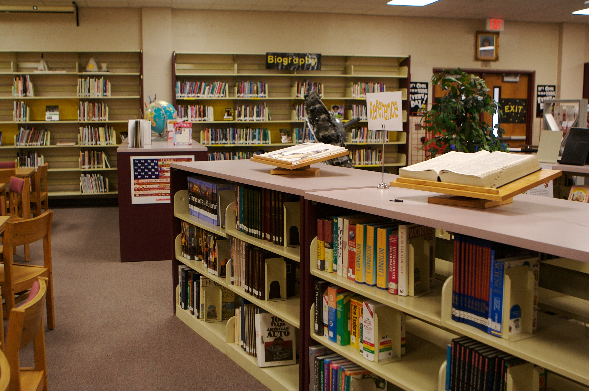

I am a student of Diploma in Information Management at University Technology Mara (UiTM) Kelantan Branch. There are many interesting things in this course that provide extensive exposure on knowledge especially on information agencies and information technology to students who venture into this course.
Information Management (IM) is an important area of content management which includes the retrieving, acquiring, organising and maintaining of information as well as the distribution and communication of information to the desired audience. Through this programme, it will focus on three divisions, namely library management, records management and information systems.I have acquired a lot of knowledge and many things I need to study in completing tasks throughout studying in this field.
Records management refers to a set of activities required for systematically controlling the creation, distribution, use, maintenance, and disposition of recorded information maintained as evidence of business activities and transactions. In terms of record management, I have learned a variety of things about records such as what is records, types of records, the place for management of records, the important of conservation the records and more about records management.
Library management is a sub-discipline of institutional management that focuses on specific issues faced by libraries and library management professionals. Library management encompasses normal managerial tasks, as well as intellectual freedom and fundraising responsibilities. Issues faced in library management frequently overlap with those faced in managing non-profit organizations. The basic functions of library management include, but are not limited to: planning and negotiating the acquisition of materials, Interlibrary Loan (ILL) requests, stacks maintenance, overseeing fee collection, event planning, fundraising, and human resources. It is probable that we only know staff only work to take care of the collections in the library but the fact is that the task of a librarian more than that according to the departments in a library which are circulation, cataloging, acquisition, reference and so on. Hence, each function of the department in the library will be explain detailed to the students who venture into this field.
Information Systems is an academic study of systems with a specific reference to information and the complementary networks of hardware and software that people and organizations use to collect, filter, process, create and also distribute data. Information systems help to control the performance of business processes. This subject has increased my knowledge of the use of information technology. I have also studied some software that helps me for video editing and various editing such as Adobe Photoshop, Adobe Indesign, Adobe illustrator and Adobe Premium Pro.

I look forward to further expanding the knowledge in this field to the degree level. I will try to come up with the best of everything to achieve my aim and goals. Higher studies will give me chance to polish my anilities. I will try my best to transfer my knowledge to other individual of my society. So in that it will help me to become a good human being as well as a useful citizen for my society as well as my country.